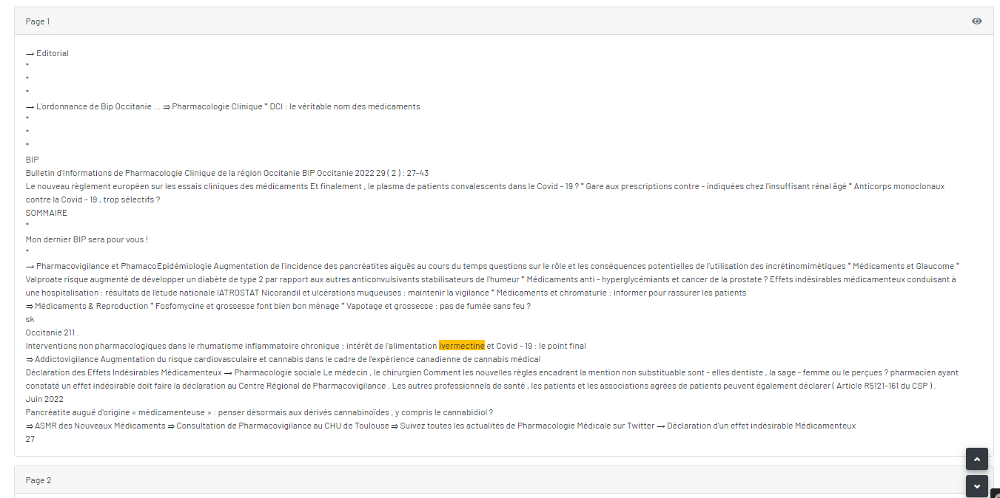

Détail des mots-clés trouvés
il y a quatre blocs : « détail du numéro », « un filtre de mots-clés », « la liste de mots-clés trouvé », et « les textes extraits du numéro page par page et ses mots-clés soulignés jaunes »
Bloc de "détail du numero"
Bloc de "filtre de mot-clé"
Bloc de "la liste de mots-clés trouvés"
Cliquez sur le nombre d'occurrences pour trouver la page correspondance et ses mots-clés surlignés jaunes.
Bloc de "les textes extraits du numero"
Les textes extraits du numéro page par page et ses mots-clés soulignés jaunes.

Mais faites attention car parfois les mots clés peuvent être trouvé mais ne pas être surligné à cause des lettres avec des accents, des majuscules, ou des minuscules.
Pour souligner ces mots, il faut les ajouter. Par exemple : acetylcystein|acétylcystéine|Acetylcystein|Acétylcystéine|ACETYLCYSTEIN|ACÉTYLCYSTÉINE